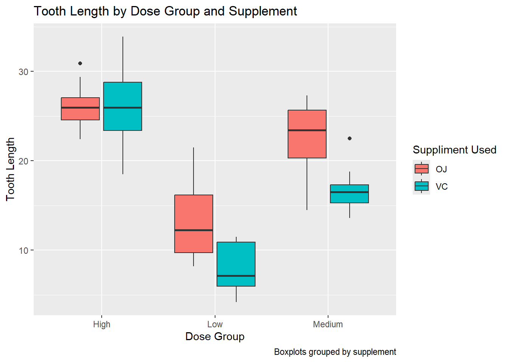
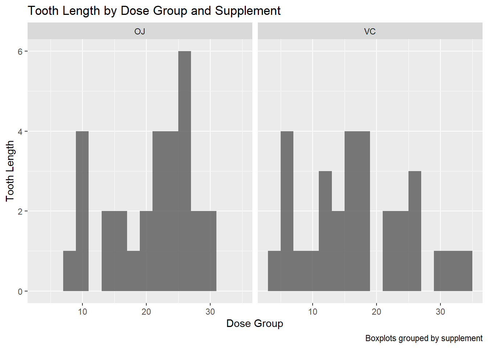

Here I am working with the ToothGrowth data in base R. In this data set either a vitamin suppliment or plain orange juice was given to guinea pigs to determine if one was better for tooth growth. My analysis will be to look at a certain dose (0.5) and see if their is a statistically significant difference between the growth for the vitamin or the juice. The intended audiance for this data is any individual in science, maybe in nutrition science who is interested in the difference between plain suppliments and food that contains that suppliment.
Original Link
The ToothGrowth dataset is available in R Lenfesty (2020).
Data Dictionary
Guinea Pigs and Vitamin C: An Old Tale
While investigating this data set, I came to realize that research done on guinea pigs and vitamin C intake has spanned almost 100 years! (Insert Image from the older paper)
NoteNote
I am not a medical expert. Please do not use this data for the care and keeping of your guinea pig.
data(ToothGrowth)library(ggplot2)library(dplyr)
Attaching package: 'dplyr'
The following objects are masked from 'package:stats':
filter, lag
The following objects are masked from 'package:base':
intersect, setdiff, setequal, union
library(dplyr)
#First I want to create a new column for the data that shows the dosage as low, medium or high. This uses the verb mutate and case whentooth_data <- ToothGrowth %>%mutate(Level =case_when( dose ==0.5~"Low", dose ==1.0~"Medium", dose ==2.0~"High" ))tooth_data
len supp dose Level
1 4.2 VC 0.5 Low
2 11.5 VC 0.5 Low
3 7.3 VC 0.5 Low
4 5.8 VC 0.5 Low
5 6.4 VC 0.5 Low
6 10.0 VC 0.5 Low
7 11.2 VC 0.5 Low
8 11.2 VC 0.5 Low
9 5.2 VC 0.5 Low
10 7.0 VC 0.5 Low
11 16.5 VC 1.0 Medium
12 16.5 VC 1.0 Medium
13 15.2 VC 1.0 Medium
14 17.3 VC 1.0 Medium
15 22.5 VC 1.0 Medium
16 17.3 VC 1.0 Medium
17 13.6 VC 1.0 Medium
18 14.5 VC 1.0 Medium
19 18.8 VC 1.0 Medium
20 15.5 VC 1.0 Medium
21 23.6 VC 2.0 High
22 18.5 VC 2.0 High
23 33.9 VC 2.0 High
24 25.5 VC 2.0 High
25 26.4 VC 2.0 High
26 32.5 VC 2.0 High
27 26.7 VC 2.0 High
28 21.5 VC 2.0 High
29 23.3 VC 2.0 High
30 29.5 VC 2.0 High
31 15.2 OJ 0.5 Low
32 21.5 OJ 0.5 Low
33 17.6 OJ 0.5 Low
34 9.7 OJ 0.5 Low
35 14.5 OJ 0.5 Low
36 10.0 OJ 0.5 Low
37 8.2 OJ 0.5 Low
38 9.4 OJ 0.5 Low
39 16.5 OJ 0.5 Low
40 9.7 OJ 0.5 Low
41 19.7 OJ 1.0 Medium
42 23.3 OJ 1.0 Medium
43 23.6 OJ 1.0 Medium
44 26.4 OJ 1.0 Medium
45 20.0 OJ 1.0 Medium
46 25.2 OJ 1.0 Medium
47 25.8 OJ 1.0 Medium
48 21.2 OJ 1.0 Medium
49 14.5 OJ 1.0 Medium
50 27.3 OJ 1.0 Medium
51 25.5 OJ 2.0 High
52 26.4 OJ 2.0 High
53 22.4 OJ 2.0 High
54 24.5 OJ 2.0 High
55 24.8 OJ 2.0 High
56 30.9 OJ 2.0 High
57 26.4 OJ 2.0 High
58 27.3 OJ 2.0 High
59 29.4 OJ 2.0 High
60 23.0 OJ 2.0 High
#Then I want to summairze the mean, median, standard deviation and count the number of observations for each doage group and each treatment. This will allow me to use group by an summarize.tooth_sum <- tooth_data %>%group_by(supp, Level) %>%summarise(Mean =mean(len),SD =sd(len),Median =median(len),n =n(), )
`summarise()` has grouped output by 'supp'. You can override using the
`.groups` argument.
print(tooth_sum)
# A tibble: 6 × 6
# Groups: supp [2]
supp Level Mean SD Median n
<fct> <chr> <dbl> <dbl> <dbl> <int>
1 OJ High 26.1 2.66 26.0 10
2 OJ Low 13.2 4.46 12.2 10
3 OJ Medium 22.7 3.91 23.5 10
4 VC High 26.1 4.80 26.0 10
5 VC Low 7.98 2.75 7.15 10
6 VC Medium 16.8 2.52 16.5 10
#Finally I want to run a t-test between the high group only. I will filter out my data set to only include these two groups, using my last dplyr verb:filtert_test_data <- tooth_data %>%filter(Level =="High")results <-t.test(len ~ supp, data = t_test_data) print(results)
Welch Two Sample t-test
data: len by supp
t = -0.046136, df = 14.04, p-value = 0.9639
alternative hypothesis: true difference in means between group OJ and group VC is not equal to 0
95 percent confidence interval:
-3.79807 3.63807
sample estimates:
mean in group OJ mean in group VC
26.06 26.14
#the bib would be useful here to show the use of the high group as the most important
#Boxplot showing the different levels and the different treatment optionsggplot(tooth_data, aes(x = Level, y = len, fill = supp)) +geom_boxplot() +labs(title ="Tooth Length by Dose Group and Supplement",x ="Dose Group",y ="Tooth Length",caption ="Boxplots grouped by supplement",fill ="Suppliment Used" )

#Histogram of all lengths facted by the suppliment used#change this up a little more!ggplot(tooth_data, aes(x = len)) +facet_wrap(~supp)+geom_histogram(binwidth =2, alpha =0.8, position ="identity") +labs(title ="Tooth Length by Dose Group and Supplement",x ="Dose Group",y ="Tooth Length",caption ="Boxplots grouped by supplement",fill ="Suppliment Used" )
Ignoring unknown labels:
• fill : "Suppliment Used"

#Scatterplot, need to change this around a little!ggplot(ToothGrowth, aes(x = dose, y = len, color = supp)) +geom_point(size =3) +geom_smooth(method ="lm", se =FALSE) +facet_wrap(~ supp) +labs(title ="Tooth Length vs Dose",subtitle ="Faceted by Supplement",x ="Dose (mg/day)",y ="Tooth Length",caption ="Scatter with linear trend" )